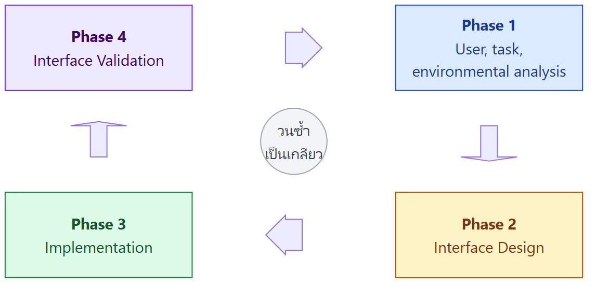
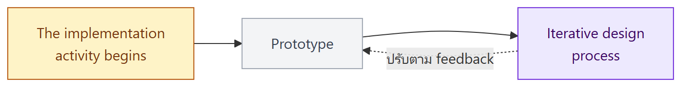

ภาพรวมบทนี้ L4–L7 โมเดลว่าระบบ ทำอะไร (use case) และ ข้อมูลไหลอย่างไร (DFD) บทนี้เป็นเรื่องส่วนที่ผู้ใช้ มองเห็นและสัมผัสจริง คือ User Interface (UI) ซึ่งเป็นบทสุดท้ายก่อน midterm
เนื้อหามี 3 ส่วน: (1) UI คืออะไร มีกี่ประเภท และกฎพื้นฐาน (2) กระบวนการออกแบบ UI 4 phase (เป็นเกลียววนซ้ำ) และ Golden Rules 3 ข้อของ Theo Mandel (3) UI design prototype แบบ low fidelity และ high fidelity (ต่อยอดจากหัวข้อ prototyping ใน L3)
1. User Interface (UI) คืออะไร
- ส่วนที่ผู้ใช้เห็นชัดที่สุด (most apparent to the user) ผู้ใช้ตัดสินซอฟต์แวร์จาก UI ก่อนสิ่งอื่น
- ประเด็นหลัก 2 เรื่อง
| ประเด็น | ความหมาย | ตัวอย่าง |
|---|---|---|
| 1. Flow of interactions | ลำดับการโต้ตอบ ผู้ใช้ทำอะไรก่อนหลัง กดแล้วไปหน้าไหน | กด "ซื้อตั๋ว" → เลือกวัน → เลือกประเภท → จ่ายเงิน |
| 2. Look and feel | หน้าตาและความรู้สึก ของ UI: สี ฟอนต์ ปุ่ม การจัดวาง | ภาพในสไลด์เป็น UI kit มี typography, สี, ปุ่ม, การ์ด |
(คอลัมน์ตัวอย่างเสริมเอง)
💡 เชื่อมกับ L3: prototype ของ requirement ก็เน้น 2 เรื่องนี้เหมือนกัน คือ visual looks และ flow
2. ประเภทของ User Interface (อ้างอิง dapth.com)
| ประเภท | ลักษณะ | ใช้กับ / ตัวอย่าง |
|---|---|---|
| Command-Line Interface (CLI) | พิมพ์ คำสั่งเป็นข้อความ | developer และ system administrator ที่ต้องการ ควบคุมได้แม่นยำ เช่น Terminal, Command Prompt |
| Text Menu Interface | UI แบบข้อความชนิดหนึ่ง แสดง เมนูเป็นข้อความบนจอ ให้เลือกโดยกด ตัวเลข ตัวอักษร หรือลูกศร | เช่น หน้า BIOS setup, ระบบ POS รุ่นเก่า (ตัวอย่างเสริม) |
| Graphical User Interface (GUI) | ใช้ องค์ประกอบกราฟิก เช่น ไอคอน หน้าต่าง | ระบบปฏิบัติการและแอปทั่วไป |
| Touchscreen UI | โต้ตอบด้วย ท่าทางสัมผัส (แตะ ปัด ซูม) | สมาร์ทโฟน แท็บเล็ต ตู้ kiosk |
| Voice User Interface (VUI) | โต้ตอบด้วย เสียงพูด ทั้งสั่งและตอบ | Siri, Alexa |
| Gesture-Based Interfaces | โต้ตอบด้วยท่าทาง แบ่งเป็น 2 แบบย่อยด้านล่าง | |
| ↳ Augmented Reality (AR) UI | ซ้อนองค์ประกอบเสมือนเข้ากับสภาพแวดล้อมจริง | แอป AR นำทาง เกม การศึกษา |
| ↳ Virtual Reality (VR) UI | สร้าง สภาพแวดล้อมเสมือนทั้งหมด ให้ผู้ใช้ดื่มด่ำ | เกม VR การจำลอง การฝึกอบรม |
สไลด์มีวิดีโอตัวอย่างของ VUI และ AR/VR (YouTube)
⚠️ AR vs VR: AR = โลกจริง + ของเสมือน (เช่น Pokémon GO) / VR = โลกเสมือนทั้งหมด (ใส่แว่นแล้วไม่เห็นโลกจริง) (ตัวอย่างเสริม)
3. Basic Rules
ซอฟต์แวร์จะ ได้รับความนิยมมากขึ้น ถ้า UI มีลักษณะดังนี้:
| # | กฎ | ความหมาย |
|---|---|---|
| 1 | Attractive | ดูน่าใช้ สวยงาม |
| 2 | Simple to use | ใช้ง่าย |
| 3 | Responsive in short time | ตอบสนองเร็ว |
| 4 | Clear to understand | เข้าใจชัดเจน |
| 5 | Consistent on all interface screens | สม่ำเสมอทุกหน้าจอ |
4. User Interface Design Process
กระบวนการออกแบบ UI เป็น เกลียว (spiral) วน 4 phase ซ้ำไปเรื่อย ๆ (คล้าย spiral model ใน L2)

Phase 1: User, Task, Environmental Analysis and Modeling
วิเคราะห์ 3 ด้าน โดยอิงจาก profile ของผู้ใช้
| ด้าน | วิเคราะห์อะไร |
|---|---|
| User | ทักษะ ความรู้ และประเภท ของผู้ใช้ |
| Task | งานที่ผู้ใช้ต้องทำ |
| Environment | สภาพแวดล้อมทางกายภาพ ที่ใช้งาน |
ตัวอย่างคำถามเรื่องสภาพแวดล้อม
- UI จะ ตั้งอยู่ที่ไหน ทางกายภาพ
- ผู้ใช้จะ นั่ง ยืน หรือทำอย่างอื่น ที่ไม่เกี่ยวกับ UI ไปด้วยไหม
- hardware ของ UI รองรับข้อจำกัดเรื่อง พื้นที่ แสง หรือเสียง ไหม
- มี ปัจจัยด้านมนุษย์ (human factors) พิเศษที่เกิดจากสภาพแวดล้อมไหม
ภาพตัวอย่างในสไลด์ 13: สภาพแวดล้อม 3 แบบ
| ภาพ | สภาพแวดล้อม | ผลต่อการออกแบบ UI (วิเคราะห์เสริม) |
|---|---|---|
| ช่างยืนใช้เครื่องตั้งศูนย์ล้อรถในอู่ | ยืน มือเปื้อน เสียงดัง ต้องมองรถสลับกับจอ | ตัวอักษรใหญ่ มองไกลได้ ปุ่มใหญ่ ใช้ได้โดยไม่ต้องจ้องนาน |
| พนักงานออฟฟิศนั่งโต๊ะใช้จอ 2 จอ | นั่ง เงียบ ใช้งานนาน ข้อมูลเยอะ | แสดงข้อมูลละเอียดได้ ใช้คีย์บอร์ดลัดได้ |
| คนยืนกดตู้ kiosk ในห้าง | ยืน เป็นคนทั่วไป ใช้ครั้งแรก มีคนต่อคิว | touchscreen เมนูน้อย ใช้ได้ทันทีไม่ต้องเรียนรู้ |
💡 ซอฟต์แวร์เดียวกันอาจต้องใช้ UI คนละแบบ ถ้าผู้ใช้และสภาพแวดล้อมต่างกัน
Phase 2: Interface Design
กำหนด:
- ชุดของ interface objects (องค์ประกอบบนหน้าจอ เช่น ปุ่ม ช่องกรอก รายการ)
- ชุดของ interface actions (การกระทำ เช่น กด ลาก พิมพ์)
Design issues ที่ต้องคิด
| Issue | ต้องคิดเรื่อง (คำอธิบายเสริม) |
|---|---|
| Response time | ระบบตอบสนองเร็วแค่ไหน และถ้าช้าต้องแสดงอะไร (เช่น loading bar) |
| Command and action structure | จัดคำสั่งและเมนูอย่างไรให้หาเจอง่าย |
| Error handling | ข้อความ error ต้องบอกว่าผิดอะไร และแก้อย่างไร |
Phase 3: Interface Construction and Implementation

- เริ่มกิจกรรมการ implement
- สร้าง prototype (ต้นแบบ)
- ปรับปรุงการออกแบบวนซ้ำ ตาม feedback
Phase 4: Interface Validation
ทดสอบ UI ว่า:
- ทำ task ของผู้ใช้ได้ทุก task อย่างถูกต้อง
- รองรับ task ทุกรูปแบบ (task variations)
- บรรลุ requirement ทั่วไปของผู้ใช้ทั้งหมด
ประเมินว่า UI:
- ใช้ง่าย (easy to use) และ เรียนรู้ง่าย (easy to learn) แค่ไหน
- ผู้ใช้ยอมรับ ว่าเป็นเครื่องมือที่มีประโยชน์ต่องานของเขา
5. Golden Rules for Interface Design (Theo Mandel)
3 Golden Rules
- Place the user in control – ให้ผู้ใช้เป็นผู้ควบคุม
- Reduce the user's memory load – ลดภาระการจำของผู้ใช้
- Make the interface consistent – ทำ UI ให้สม่ำเสมอ
(อ้างอิง theomandel.com)
Rule 1: Place the User in Control
| หลักการ | ความหมาย | ตัวอย่างจากสไลด์ |
|---|---|---|
| Define interaction modes that do not force unnecessary or undesired actions | กำหนดโหมดการใช้งานที่ไม่บังคับให้ผู้ใช้ทำสิ่งที่ไม่จำเป็นหรือไม่ต้องการ | เลือก spell check mode ในโปรแกรมพิมพ์เอกสาร หน้าจอต้องแสดงว่าอยู่ในโหมดตรวจคำ และ ออกจากโหมดได้ง่าย |
| Provide for flexible interaction | ให้โต้ตอบได้หลายวิธี | ใช้ คีย์บอร์ด, เมาส์, touch screen หรือเสียง ได้ |
| Allow user interaction to be interruptible and undoable | หยุดกลางคันได้ และ ย้อนกลับ (undo) ได้ | (เสริม: Ctrl + Z, ปุ่มยกเลิกระหว่างอัปโหลด) |
| Allow advanced users to customize their interface | ผู้ใช้ขั้นสูง ปรับแต่ง UI เพื่อให้ใช้คล่องขึ้น | (เสริม: ตั้ง shortcut เอง, จัด toolbar) |
| Hide technical interfaces from casual users | ซ่อนส่วนเทคนิค จากผู้ใช้ทั่วไป | (เสริม: ไม่แสดง error code หรือ stack trace กับผู้ใช้ทั่วไป) |
| Design for direct interaction with objects on the screen | ให้ จัดการวัตถุบนจอได้โดยตรง | ลากไฟล์ไปที่ไอคอนถังขยะ เพื่อลบไฟล์ |
Rule 2: Reduce the User's Memory Load
| หลักการ | ความหมาย | ตัวอย่างจากสไลด์ |
|---|---|---|
| Reduce demand on short-term memory | ลดสิ่งที่ผู้ใช้ต้องจำไว้ชั่วคราว ให้ visual clues ช่วยให้ จำได้ว่าทำอะไรไปแล้ว | (เสริม: ลิงก์ที่กดแล้วเปลี่ยนสี, แถบบอกขั้นตอน 1-2-3 ตอนชำระเงิน) |
| Establish meaningful defaults | ค่าเริ่มต้น ต้องสมเหตุสมผลสำหรับผู้ใช้ทั่วไป | (เสริม: ช่องประเทศตั้งค่าเริ่มต้นเป็นไทยสำหรับเว็บไทย) |
| Define shortcuts that are intuitive | คีย์ลัดที่เดาได้ง่าย | Ctrl + P = print, Ctrl + S = save, Cmd + C = copy |
| Visual layout based on a real-world metaphor | ออกแบบโดย เปรียบกับของในโลกจริง | ใช้ รูปบ้าน แทนคำสั่ง "Back to home screen" |
| Disclose information in layers | เปิดเผยข้อมูลเป็นชั้น ๆ แสดงข้อมูลทั่วไปก่อน แล้วค่อยแสดงรายละเอียด | (เสริม: รายการสินค้าแสดงชื่อและราคา กดเข้าไปถึงเห็นสเปกเต็ม) |
💡 หลัก "recognition over recall": ผู้ใช้ จำได้เมื่อเห็น ง่ายกว่า นึกออกเอง จึงควรแสดงตัวเลือกให้เห็น แทนการให้พิมพ์คำสั่งจากความจำ (แนวคิดเสริม)
Rule 3: Make the Interface Consistent
| หลักการ | ความหมาย | ตัวอย่างจากสไลด์ |
|---|---|---|
| Allow a user to put the current task into a meaningful context | ผู้ใช้รู้ว่า ตอนนี้อยู่ตรงไหน ทำอะไรอยู่ โดยมี ตัวบ่งชี้ | window titles, graphical icons, consistent color coding |
| Maintain consistency across the system | สม่ำเสมอทั้งระบบ | (เสริม: ปุ่ม "ยืนยัน" อยู่ตำแหน่งและสีเดียวกันทุกหน้า) |
| Do not make changes to the existing interactive models | อย่าเปลี่ยนรูปแบบการโต้ตอบที่ผู้ใช้คุ้นเคยแล้ว | Ctrl + S เป็นที่รู้กันว่าคือ save อย่าเอาไปใช้กับคำสั่งอื่น |
⚠️ ความต่างระหว่าง 2 ข้อที่ใช้ Ctrl + S เป็นตัวอย่าง:
- Rule 2 (shortcut ที่เดาง่าย): เลือกคีย์ลัดที่สื่อความหมาย เช่น Save = Ctrl + S
- Rule 3 (ไม่เปลี่ยนสิ่งที่คุ้นเคย): เมื่อทุกโปรแกรมใช้ Ctrl + S เป็น save แล้ว อย่าเอาไปทำอย่างอื่น
6. UI Design Prototype
อ้างอิง protopie.io – มี 2 ประเภท
| Low fidelity | High fidelity | |
|---|---|---|
| ลักษณะ | เรียบง่าย หยาบ ๆ | ละเอียดมาก มี UI element, เนื้อหา และการโต้ตอบที่สมจริง |
| เน้น | โครงสร้างพื้นฐานและฟังก์ชัน ไม่สนรายละเอียดการออกแบบ | เลียนแบบผลิตภัณฑ์จริงให้ใกล้ที่สุด บางครั้งมี animation และ transition |
| เหมาะกับ | feedback ช่วงแรก และ brainstorming | user testing ที่แม่นยำ และ สาธิตงานออกแบบสุดท้าย; validate design, usability และ functionality ก่อนพัฒนาจริง |
| ตัวอย่าง | Paper prototypes, click-through prototypes | Digital code-free prototypes, coded prototypes |
| ต้นทุนและเวลา (เสริม) | ต่ำ แก้ง่าย ทิ้งง่าย | สูงกว่า แก้ช้ากว่า |
ตัวอย่าง Low Fidelity Prototypes (สไลด์ 22–24)
- Outlook แบบกระดาษ – ทำหน้าจอ Outlook ด้วยกระดาษสีและ post-it แบ่งส่วน Inbox, Contacts, Calendar, Tasks
- ภาพสเก็ตช์ดินสอของเว็บไซต์ "Coastal Capital" – วาดโครงหน้าเว็บ มีหมายเหตุกำกับแต่ละส่วน เช่น logo, horizontal navigation, blog post, RSS feeds, search, privacy/disclaimer link
- Paper prototype บนแท็บเล็ต – วาดหน้าจอบนกระดาษ วิธีทดสอบที่นิยมคือ ให้คนหนึ่งเล่นเป็น "คอมพิวเตอร์" คอยสลับแผ่นกระดาษตามที่ผู้ใช้เลือก (ภาพจาก UX Playground)
- Paper prototype มือถือ – หน้าจอ EULA มีปุ่ม Yes/No แสดงว่า สร้างและทดสอบ UI ได้เร็ว (ภาพจาก Vimeo)
- Low-fidelity prototype ใน Adobe XD – หน้าจอเป็นโครงสีเทา (wireframe) หลายหน้า มี เส้นสีฟ้าเชื่อมบอก flow ว่ากดแล้วไปหน้าไหน เช่น Welcome, Login, Create account, Search, Cat list
⚠️ Low fidelity ไม่ได้แปลว่าต้องเป็นกระดาษเสมอ prototype ที่ทำในโปรแกรม (Adobe XD) ก็เป็น low fidelity ได้ ถ้ายังเป็นแค่โครงสีเทาที่เน้น flow ไม่มีรายละเอียดการออกแบบ
ตัวอย่าง High Fidelity Prototype (สไลด์ 25)
"Graphical User Interface (UI) Elements – 3-Panel Selector"
- หน้าจอเลือก targeting criteria แบบ 3 คอลัมน์ (Geography → Country → รายชื่อประเทศ) และมีแผง Selection Summary
- มี spec ละเอียดระดับ pixel: ขนาด (เช่น 176, 506, 496 px), ฟอนต์ (Roboto Medium 14pt, Roboto Bold 17pt), รหัสสี (#4C4C4C, #FFFFFF, #CCCCCC), เส้นขอบ 1px
- ระบุ สถานะของ element เช่น Selected, Static, Hover
- พร้อมส่งให้ developer สร้างตามได้ทันที
💡 เลือกใช้เมื่อไหร่ (สรุปเสริม)
- ช่วงแรก ยังไม่แน่ใจว่า flow ถูกไหม → low fidelity (ถูก เร็ว ทิ้งได้)
- ช่วงท้าย flow นิ่งแล้ว ต้องทดสอบกับผู้ใช้จริงหรือส่งให้ dev → high fidelity
- ตรงกับ Phase 3 (Prototype → Iterative design) ของกระบวนการออกแบบ UI
คำศัพท์สำคัญ
| คำศัพท์ | ความหมาย | จำง่าย ๆ ว่า |
|---|---|---|
| User Interface (UI) | ส่วนที่ผู้ใช้เห็นและโต้ตอบกับระบบ | หน้าตาระบบ |
| Flow of interactions | ลำดับการโต้ตอบ กดแล้วไปไหน | เส้นทางการใช้ |
| Look and feel | หน้าตาและความรู้สึก: สี ฟอนต์ ปุ่ม | ความสวย |
| CLI | Command-Line Interface พิมพ์คำสั่ง | Terminal |
| Text Menu Interface | เมนูข้อความ เลือกด้วยตัวเลข ตัวอักษร หรือลูกศร | เมนูกดเลข |
| GUI | Graphical User Interface ไอคอน หน้าต่าง | Windows |
| Touchscreen UI | สัมผัส ปัด แตะ | มือถือ / kiosk |
| VUI | Voice User Interface สั่งด้วยเสียง | Siri / Alexa |
| AR | Augmented Reality ของเสมือนซ้อนบนโลกจริง | Pokémon GO |
| VR | Virtual Reality โลกเสมือนทั้งหมด | ใส่แว่น VR |
| User / Task / Environmental analysis | วิเคราะห์ผู้ใช้ งาน และสภาพแวดล้อม (Phase 1) | ใคร ทำอะไร ที่ไหน |
| Human factors | ปัจจัยด้านมนุษย์ที่มีผลต่อการใช้งาน | ข้อจำกัดของคน |
| Interface objects / actions | องค์ประกอบบนจอ / การกระทำกับองค์ประกอบ | ปุ่ม / กด |
| Response time | เวลาที่ระบบตอบสนอง | เร็วแค่ไหน |
| Error handling | การจัดการและแจ้งข้อผิดพลาด | ผิดแล้วบอกยังไง |
| Iterative design | ออกแบบ ทดสอบ แล้วปรับวนซ้ำ | ทำ-ลอง-แก้ |
| Interface validation | ทดสอบว่า UI ทำ task ได้ครบ ใช้ง่าย เรียนรู้ง่าย และผู้ใช้ยอมรับ | ตรวจ UI |
| Golden Rules (Theo Mandel) | user in control, reduce memory load, consistent | 3 กฎทอง |
| Interaction mode | โหมดการทำงาน เช่น spell check mode | โหมด |
| Undoable | ย้อนกลับได้ | Ctrl + Z |
| Direct manipulation | จัดการวัตถุบนจอโดยตรง เช่น ลากไฟล์ลงถังขยะ | ลากวาง |
| Meaningful defaults | ค่าเริ่มต้นที่เหมาะกับผู้ใช้ทั่วไป | ค่าตั้งต้นที่ดี |
| Real-world metaphor | ใช้สัญลักษณ์จากโลกจริง เช่น รูปบ้าน = home | เปรียบของจริง |
| Disclose information in layers | แสดงข้อมูลทั่วไปก่อน รายละเอียดทีหลัง | ทีละชั้น |
| Low fidelity prototype | ต้นแบบหยาบ เน้นโครงสร้างและฟังก์ชัน เช่น กระดาษ, click-through | ร่างคร่าว ๆ |
| High fidelity prototype | ต้นแบบละเอียดเหมือนของจริง เช่น digital code-free, coded | เหมือนของจริง |
| Paper prototype | หน้าจอวาดบนกระดาษ ให้คนเล่นเป็นคอมพิวเตอร์สลับแผ่น | กระดาษ |
| Click-through prototype | ภาพหน้าจอที่กดลิงก์เชื่อมกันได้ | กดไปมาได้ |
สรุปท้ายบท / จุดที่มักออกสอบ
เรื่องที่ต้องจำ
- UI มี 2 ประเด็นหลัก: flow of interactions และ look and feel
- ประเภท UI: CLI, Text Menu, GUI, Touchscreen, VUI, Gesture-based (AR, VR)
- Basic Rules 5 ข้อ: attractive, simple to use, responsive in short time, clear to understand, consistent on all screens
- UI Design Process 4 phases (spiral):
- User, task, environmental analysis and modeling
- Interface design (objects, actions, design issues: response time, command/action structure, error handling)
- Interface construction and implementation (implementation begins → prototype → iterative design)
- Interface validation (ทำทุก task ได้, รองรับ task variations, ตาม requirement, ใช้ง่าย เรียนรู้ง่าย, ผู้ใช้ยอมรับ)
- Theo Mandel Golden Rules 3 ข้อ และหลักย่อยของแต่ละข้อ พร้อมตัวอย่าง (spell check mode, ลากไฟล์ลงถังขยะ, Ctrl + P / S, Cmd + C, รูปบ้าน, Ctrl + S ห้ามใช้ทำอย่างอื่น)
- Low vs High fidelity prototype: ลักษณะ, จุดเน้น, ใช้เมื่อไร, ตัวอย่าง
คู่ที่มักสับสน
| คู่ | ต่างกันที่ |
|---|---|
| Flow of interactions vs Look and feel | ลำดับการใช้งาน vs หน้าตา |
| CLI vs Text Menu | พิมพ์คำสั่งเอง vs เลือกจากเมนูที่แสดง |
| AR vs VR | ซ้อนบนโลกจริง vs โลกเสมือนทั้งหมด |
| Phase 2 vs Phase 3 | ออกแบบ objects/actions vs สร้าง prototype และปรับวนซ้ำ |
| Phase 1 vs Phase 4 | วิเคราะห์ผู้ใช้ก่อนออกแบบ vs ทดสอบ UI หลังสร้าง |
| Rule 1 vs Rule 2 vs Rule 3 | ผู้ใช้ควบคุมได้ vs ผู้ใช้ไม่ต้องจำ vs ทุกที่เหมือนกัน |
| Intuitive shortcuts vs Don't change existing models | เลือกคีย์ลัดให้เดาง่าย vs อย่าเปลี่ยนคีย์ลัดที่คนคุ้นแล้ว |
| Low vs High fidelity | หยาบ เร็ว ใช้ช่วงแรก vs ละเอียด สมจริง ใช้ validate ก่อนพัฒนา |
แนวคิดที่ต้องอธิบายได้
- ทำไมต้องวิเคราะห์สภาพแวดล้อม (Phase 1) เพราะผู้ใช้ที่ยืนในอู่ซ่อมรถ นั่งในออฟฟิศ หรือกดตู้ kiosk ในห้าง ต้องการ UI ต่างกันมาก
- ทำไม UI design เป็นเกลียววนซ้ำ เพราะต้องสร้าง prototype ไปทดสอบกับผู้ใช้ แล้วนำ feedback กลับมาวิเคราะห์และออกแบบใหม่
- โจทย์สถานการณ์ "ข้อนี้ละเมิด golden rule ข้อไหน" เช่น
- ไม่มีปุ่ม undo หรือออกจากโหมดไม่ได้ → Rule 1 (user in control)
- ต้องจำรหัสสินค้าจากหน้าก่อนมากรอกหน้านี้ → Rule 2 (memory load)
- ปุ่มยืนยันอยู่คนละตำแหน่งและคนละสีในแต่ละหน้า หรือใช้ Ctrl + S เป็นคำสั่งลบ → Rule 3 (consistent)
- ทำไมเริ่มจาก low fidelity เพราะถูกและเร็ว ได้ feedback เรื่องโครงสร้างและ flow ก่อนเสียเวลากับรายละเอียดการออกแบบที่อาจต้องทิ้ง